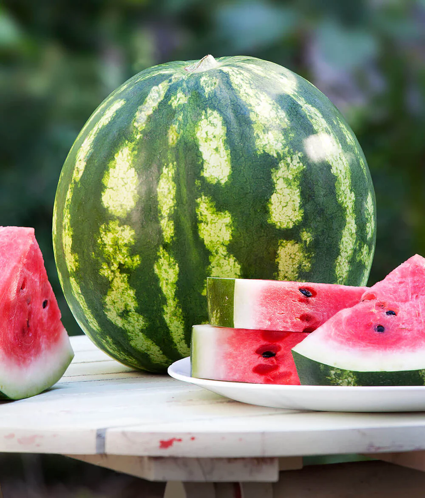

---The Crimson sweet watermelon is one of many different kinds of watermelons. It was created by Kansas State University in 1963. Since then, it has become a classic favorite for all watermelon enjoyers. It is a light green melon with dark stripes. It it quite well known for its high sugar content and wonderful flavor. Its vines are resistant against two common forms of wilts, which makes it a non-worrisome grow. Once growing, the vines will spread out far, so room is definitely needed for this plant.

Planting begins late spring/early summer. Ensure that soil temps have reached +70°F or wait 2 weeks after the last frost of the season in the area. Plant in a sunny area.
Space individual seedlings 3'- 5' apart in nutrient-rich, well drained soil with the approximate pH levels of 6.0 - 6.8.
Give the watermelons a headstart by providing a few inches of of aged compost or other decomposing organic matter.
Be sure to apply a consistent water supply, as it is critical for the growth size and flavor. Soaker hose or drip irrigation is recommended but avoid wetting the leaves.
Watermelons are very nutrient hungry, so, a continuous supply of slow-release fertilizer is regularly needed.
Be sure to keep young melons off the ground. Simple solution: make a bed of straw.
Knowing when to harvest them after 80 days can sometimes be tricky: They are harvestable when they turn from bright to dull green. They should sound hollow when knocked on. The closest tendril, following from the melon, should be completely dry to the base. The vine attached starts to look dry. The melon exhibits great rib form. Try to reduce water intake on the last days to help begin this process.
More info